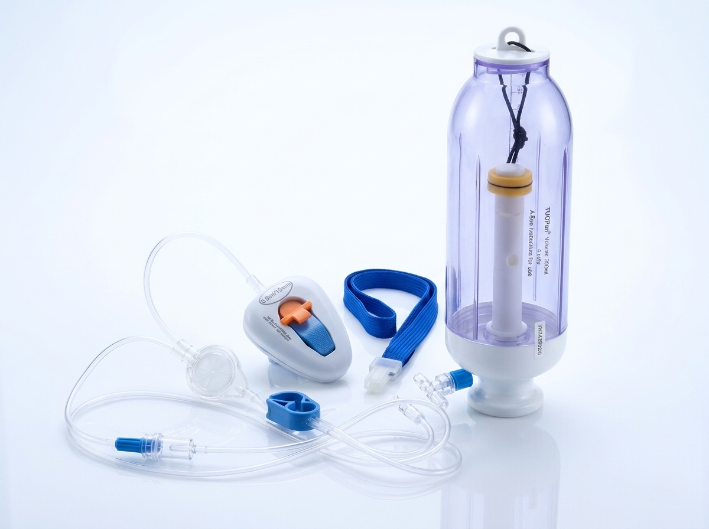
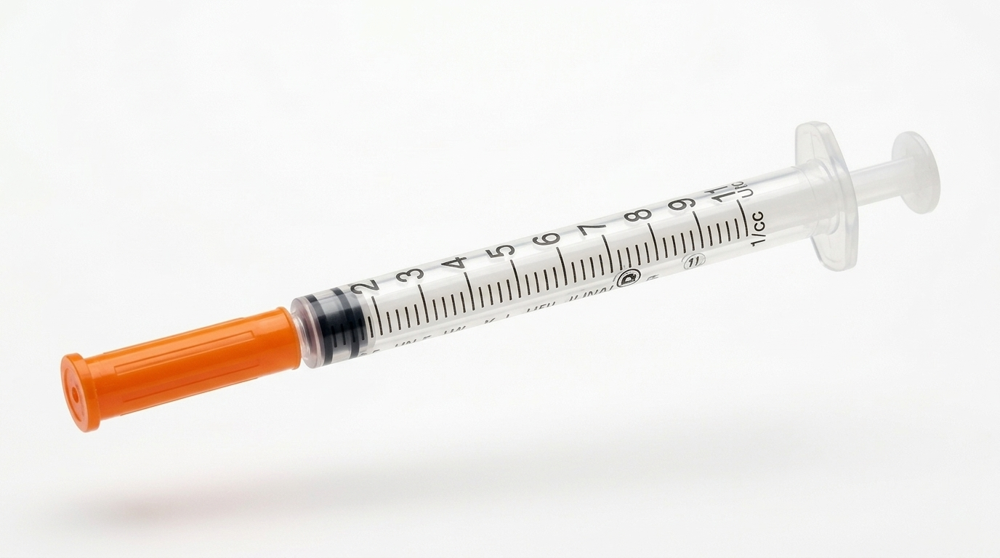

★★★★★
Me operé de liposucción y mi cirujano me recomendó la bomba de dolor. La diferencia fue increíble. El primer día casi no sentí nada, dormí bien y pude caminar al día siguiente. 100% recomendable.
Las bombas de dolor de Santa Cruz Medical liberan analgésico de forma controlada y continua, directamente en el sitio de la cirugía. Recuperación más cómoda, sin hospitalizaciones innecesarias.
Nuestros tratamientos
Dos tratamientos médicos especializados con entrega y soporte por WhatsApp.
Control óptimo del dolor postoperatorio con liberación continua de analgésico local. Ideal para liposucción, abdominoplastia, mamoplastia y rinoplastia.
Conocer másTratamiento médico semanal con análogos de GLP-1 (Semaglutida, Liraglutida). Reduce el apetito, controla la glucosa y favorece pérdida de peso sostenida.
Ver tratamiento
Conoce el producto
Una bomba de dolor (o bomba elastomérica) es un dispositivo médico de un solo uso que libera un analgésico local de forma constante y controlada directamente en la zona operada, durante las primeras horas o días tras la cirugía.
Es especialmente usada después de cirugías estéticas y plásticas como liposucción, abdominoplastia, aumento de mamas y rinoplastia, permitiendo que el paciente se recupere en casa con mucho menor discomfort.
No requiere electricidad ni baterías. Funciona por presión elastomérica.
Libera el analgésico de forma gradual según la velocidad indicada por tu médico.
No necesitas quedarte hospitalizado. Puedes recuperarte con comodidad en tu hogar.
Por qué elegir Santa Cruz Medical
Diseñada para brindarte la máxima comodidad en los momentos más importantes de tu recuperación.
Mantiene un nivel constante de analgésico en la zona operada, eliminando los picos de dolor entre dosis orales.
Al controlar el dolor en la fuente, reduces la necesidad de pastillas que pueden causar náuseas y molestias gástricas.
El manejo efectivo del dolor permite movilizarte antes, dormir mejor y retomar tu vida cotidiana en menos tiempo.
No necesitas entrenamiento especial. Te explicamos paso a paso cómo usarla y estamos disponibles por WhatsApp ante cualquier duda.
Proceso paso a paso
Desde la sala de operaciones hasta tu casa, así es el recorrido de tu bomba de dolor.
Durante o justo después de la cirugía, tu cirujano posiciona un pequeño catéter (tubito) en la zona operada, donde queda el dolor.
La bomba elastomérica de Santa Cruz Medical — precargada con analgésico local — se conecta al catéter mediante un tubo flexible y seguro.
La presión interna del globo elastomérico impulsa el medicamento a una velocidad constante (por ejemplo, 2 ml/hora), sin pilas ni botones.
La bomba dura entre 24 y 72 horas según el modelo. Una vez vacía, la retiras fácilmente y la desechas. Te explicamos todo por WhatsApp.
Tratamiento médico
Ofrecemos tratamientos inyectables modernos basados en análogos de GLP-1 (Semaglutida y Liraglutida), que ayudan a controlar el apetito, regular la glucosa y favorecer una pérdida de peso saludable y sostenida.
Con seguimiento médico personalizado y entrega discreta a domicilio en Santa Cruz, Bolivia.
* Este tratamiento debe ser indicado y supervisado por un profesional médico. Los resultados varían según el paciente.
Caso Real Verificado
Reducción notable del perímetro abdominal y cintura con tratamiento inyectable semanal y supervisión médica continua.
Insumos de precisión
Insumos descartables de grado farmacéutico con aguja ultrafina para una aplicación semanal prácticamente indolora. Con indicación y control continuo de un profesional médico en Santa Cruz.

Lo que dicen nuestras pacientes
Pacientes reales que vivieron una recuperación más tranquila con Santa Cruz Medical.
Me operé de liposucción y mi cirujano me recomendó la bomba de dolor. La diferencia fue increíble. El primer día casi no sentí nada, dormí bien y pude caminar al día siguiente. 100% recomendable.
Después de mi abdominoplastia tenía mucho miedo al dolor. Con la bomba de Santa Cruz Medical los primeros dos días fueron manejables. Me enviaron instrucciones por WhatsApp y respondieron todas mis dudas al instante.
Empecé el tratamiento de inyecciones para bajar de peso hace 3 meses y bajé 9 kilos sin pasar hambre. El control médico semanal me dio mucha confianza. ¡Gracias Santa Cruz Medical!
Simple y rápido
Tres pasos sencillos. Sin formularios complicados. Todo por WhatsApp.
Envíanos un mensaje indicando qué tratamiento te interesa: bomba de dolor o inyecciones para bajar de peso.
Te indicamos el modelo o tratamiento adecuado, el precio y coordinamos la entrega en Santa Cruz.
Entregamos directamente en tu dirección en Santa Cruz. Incluimos instrucciones y soporte por WhatsApp.
Resolvemos tus dudas
¿Tienes una pregunta que no está aquí? Escríbenos por WhatsApp.
Es un dispositivo médico pequeño y desechable, también conocido como bomba elastomérica. Contiene un reservorio flexible con analgésico local que se libera de forma constante a través de un catéter colocado en la zona operada. No requiere pilas ni electricidad.
Sí, son medicamentos aprobados internacionalmente (Semaglutida, Liraglutida) cuando se aplican bajo supervisión médica. Hacemos una evaluación previa, control mensual del progreso y ajuste de dosis personalizado. No se administran sin valoración médica.
Depende del modelo y del flujo configurado. Generalmente entre 24 y 72 horas posteriores a la cirugía, que coincide con el período de mayor dolor post-operatorio.
Coordinamos la entrega por WhatsApp. Hacemos entregas en la mayoría de los barrios de Santa Cruz (Equipetrol, Las Palmas, Urubó, Plan 3000, 2do, 3er y 4to anillo y más). Recomendamos pedir con 48 horas de anticipación.
El equipo de Santa Cruz Medical está disponible por WhatsApp durante todo el período del tratamiento para resolver cualquier duda en tiempo real. Para urgencias médicas, siempre debes contactar a tu médico cirujano o acudir a urgencias.
Da el primer paso
Escríbenos ahora por WhatsApp. Estamos en Santa Cruz, Bolivia, y respondemos en minutos. Sin compromiso.
Pedir ahora por WhatsApp